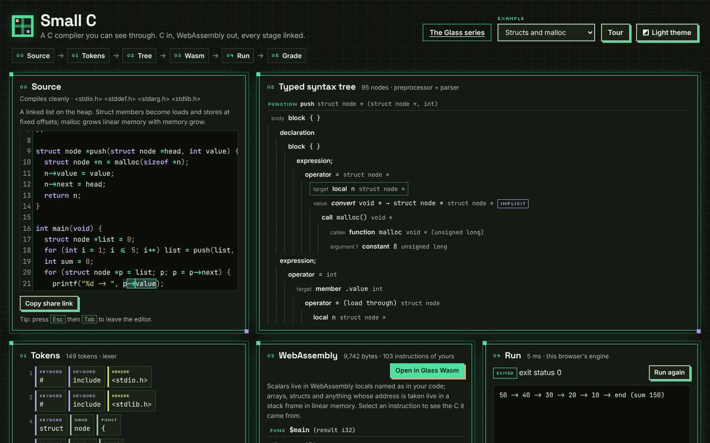

03 · Live
Small C
A compiler for most of C, written from scratch in the spirit of chibicc: a preprocessor, a parser that works out every type, and a code generator that writes real WebAssembly. Type C and watch its tokens, its typed syntax tree and its WebAssembly, all linked, then run it in your browser or step through it in Glass Wasm.

01 What you can do
- Write C. Structs, unions, pointers, function pointers, arrays, enums, bit-fields,
goto,switch, variadic functions and the preprocessor, compiled as you type. - See what C does for you. The tree shows every conversion C makes without being asked, like an
intbecoming adoubleor an array becoming a pointer. - Read the WebAssembly. Click an instruction to see the C it came from. Scalars stay in named WebAssembly locals; arrays and structs live in a stack frame in memory.
- Run it, then step it. Programs run on your browser's engine, and Open in Glass Wasm lets you step through them one instruction at a time.
- Look inside printf. The C library is C too, compiled with your program; its
%fprints a double's exact value, rounded the way glibc does.
02 How it's graded
By c-testsuite's single-exec suite: 220 C programs from the tcc and scc compilers, each with the exact output it
must print. Every program is compiled by Small C and run twice, on Node's WebAssembly engine and on Glass Wasm.
Recorded by scripts/record-results.mjs.
A test passes when its output (stdout and stderr) matches the .expected file byte for byte and it
exits with status 0. Any test that does not pass is listed on the Small C page with the reason.
03 What it leaves out
C11 threads and atomics, complex numbers, setjmp, wide-character library functions and real files
(fopen works on files in memory that last until the program ends). long double is a
plain double. Glass Kernel will run these programs with a real file system.